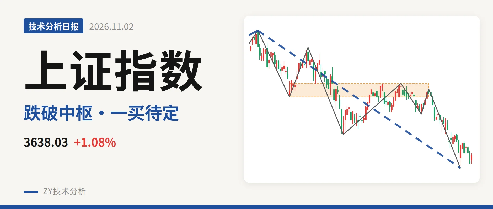
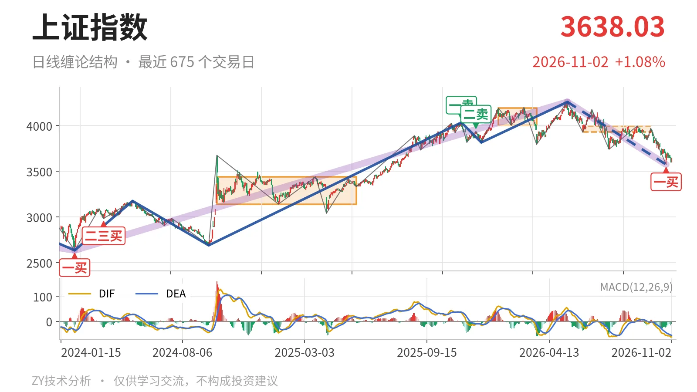
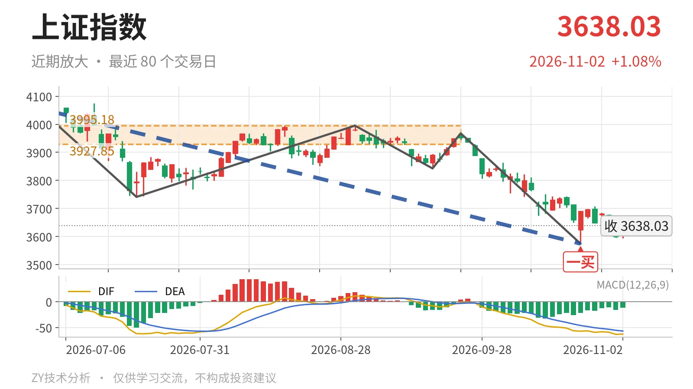

上证指数｜中枢失守后反抽未回，3928点看三卖

最近日线中枢 3927.85—3995.18点，收盘位于中枢之下
一句话：日线下跌段延续，收于中枢下方，反抽未成笔
📉 走势结构：日线下跌段未结束，更大级别上涨仍未被完全否定
日线级别仍处在5月14日至10月23日的下跌线段里，这段还没走完。该线段从4258.86点跌至3574.27点，跌幅16.1%，内部含7笔；10月26日以后最高只到3708.20点，连一笔日线反弹都没走出来。更大级别上，2024年2月5日至2026年5月14日的上涨段未被完全否定，但当下这一段是其中的回调，且回调结束结构还没出现。日线重心仍在向下压。

🧭 中枢与位置：跌破最近中枢，重心下移
最新收盘3638.03点，已跌破6月8日至9月22日日线笔中枢3927.85—3995.18点，低于下沿约7.4%。这不是继续在中枢里震荡，而是价格离开中枢后向下延伸。中枢位置由1月14日至3月23日的4002.78—4190.87点下移至3927.85—3995.18点，重心已经降低。该中枢尚未完成，价格跌破后，原支撑转成压力。
📌 买卖点：10月23日一买结构存在，反抽未回中枢前需防三卖
10月23日一买3574.27点，对应9月22日至10月23日下跌笔；该笔已经结束，因此这不是暂定的一买。但一买之后最高仅3708.20点，尚未形成上涨笔，价格也没有回到3928点附近。若后续反抽始终回不到3928点上方，对6月8日以来中枢将构成三卖。更早的2025年11月14日一卖4034.08点、2025年12月8日二卖3936.31点之后，高点一个比一个低，下跌结构仍有延续性。若后续再破3574点，10月23日一买只对应更小级别，日线一买结构会被重构。

⚡ 背驰：DIF新低破坏“新低不新弱”，一买性质变弱
比较6月23日至7月20日与9月22日至10月23日两段日线下跌笔：6月23日至7月20日下跌笔的绿柱面积289、DIF低点-61.8；9月22日至10月23日下跌笔的绿柱面积347、DIF低点-57.1。单看后者，价格创3574.27点新低，DIF低点却没有同步新低，有“新低不新弱”苗头。但10月26日以来最低3594.77点尚未击穿3574.27点，最新DIF已到-62.7，低于-61.8，DIF低点被刷新，这个背驰苗头被破坏。同时，9月22日至10月23日下跌笔的绿柱面积347大于6月23日至7月20日下跌笔的绿柱面积289，说明下跌动能未明显衰竭。因此10月23日一买更接近盘整背驰性质，且当前仍未坐实。
🔎 关键位置：反抽3928点决定三卖，3574点是一买能否保留的关键
上方第一个关键位看3928点附近，即最近中枢下沿3927.85点；回到中枢上沿3995点附近之前，上冲都只能当反抽看。下方短线支撑看3574点附近，也就是10月23日一买低点。结构含义是：反抽若回不到3928点上方，结构上构成三卖，日线下跌段继续延伸；若重新站上3928点，下跌更可能只是中枢扩展，而不是趋势下跌。当前3638.03点仍在中枢下方，10月26日以来反弹最高3708.20点、离3928点约220点且未成笔，DIF仍在零轴下。判断为偏弱：弱在价格位于中枢下方、DIF零轴下、反弹未成笔。
⚠️ 本文为基于公开行情数据的缠论技术结构记录，由程序自动计算并生成，仅供学习交流，不构成任何投资建议。市场有风险，投资需谨慎。